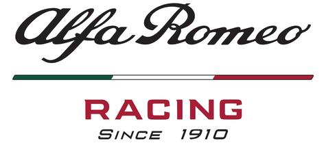

Get to know the Teams.
Ferrari
Scuderia Ferrari S.p.A. is the racing division of luxury Italian auto manufacturer Ferrari and the racing team that competes in Formula One racing. The team is also nicknamed "The Prancing Horse", with reference to their logo. It is the oldest surviving and most successful Formula One team, having competed in every world championship since the 1950 Formula One season. The team was founded by Enzo Ferrari, initially to race cars produced by Alfa Romeo, though by 1947 Ferrari had begun building its own cars. Among its important achievements outside Formula One are winning the World Sportscar Championship, 24 Hours of Le Mans, 24 Hours of Spa, 24 Hours of Daytona, 12 Hours of Sebring, Bathurst 12 Hour, races for Grand tourer cars and racing on road courses of the Targa Florio, the Mille Miglia and the Carrera Panamericana.
Mercedes
Mercedes-Benz, is currently involved in Formula One as a constructor under the name of Mercedes-AMG Petronas Motorsport. Mercedes-Benz competed in the pre-war European Championship winning three titles and debuted in Formula One in 1954, running a team for two years. The team is also known by their nickname, the "Silver Arrows". Mercedes has become one of the most successful teams in recent Formula One history, having achieved consecutive Drivers' and Constructors' Championships from 2014 to 2019. In 2014, Mercedes managed 11 one-two finishes beating McLaren's 1988 record of 10. The record was extended the following year with 12 one-two finishes. Mercedes also collected 16 victories in 2014 and 2015 apiece breaking McLaren (1988) and Ferrari's (2002, 2004) record of 15. In 2016, they extended this record with 19 wins.
Red Bull Racing
Red Bull Racing (currently sponsored name Aston Martin Red Bull Racing and also simply known as Red Bull or RBR) is a Formula One racing team, racing a Honda powered car under an Austrian licence and based in the United Kingdom. The team raced under a British licence from 2005 to 2006 and has raced under an Austrian licence since 2007. It is one of two Formula One teams owned by beverage company Red Bull GmbH, the other being Scuderia Toro Rosso. The team has been managed by Christian Horner since its formation in 2005. Red Bull had Cosworth engines in 2005 and Ferrari engines in 2006. The team used engines supplied by Renault between 2007 and 2018. During this partnership they won four successive Drivers' and Constructors' Championship titles from 2010 to 2013. The team began using Honda engines in 2019.
McLaren
McLaren Racing Limited is a British motor racing team based at the McLaren Technology Centre, Woking, Surrey, England. McLaren is best known as a Formula One constructor and also has a history of competing in American open wheel racing as both an entrant and a chassis constructor, and has won the Canadian-American Challenge Cup (Can-Am) sports car racing championship. The team is the second oldest active, and second most successful Formula One team after Ferrari, where they compete as McLaren F1 Team, having won 182 races, 12 Drivers' Championships and eight Constructors' Championships. Founded in 1963 by New Zealander Bruce McLaren, the team won its first Grand Prix at the 1968 Belgian Grand Prix. The team is a wholly owned subsidiary of the McLaren Group.
Renault
The French automotive manufacturer Renault has been associated with Formula One as both constructor and engine supplier for various periods since 1977. In 1977, the company entered Formula One as a constructor, introducing the turbo engine to Formula One in its first car, the Renault RS01. In 1983, Renault began supplying engines to other teams. Although the Renault team won races and competed for world titles, it withdrew at the end of 1985. Renault continued supplying engines to other teams until 1986, then again from 1989 to 1997 and at various other times since then until the present. Renault returned to Formula One in 2000 when it acquired the Enstone-based Benetton Formula team (formerly Toleman). In 2002 Renault re-branded the team as Renault F1 Team and started to use Renault as their constructor name, winning both the Drivers' and Constructors' Championships in 2005 and 2006.
Racing Point
Racing Point F1 Team competing as SportPesa Racing Point F1 Team is the team that Racing Point UK has entered into the 2019 Formula One World Championship, using the constructor name of "Racing Point". The team, based in Silverstone, United Kingdom, competes under a British licence. The team was renamed in February 2019 from Racing Point Force India F1 Team, which used the constructor name of Racing Point Force India for the 2018 season. The 2019 season also saw the team branded as "SportPesa Racing Point F1 Team", acknowledging lead sponsor SportPesa, a sports betting company from Kenya. The team's car for the 2019 season, the Racing Point RP19, was announced in Toronto, Canada. The team's drivers for the 2019 season are Sergio Pérez and Lance Stroll, with the team making its racing debut at the 2019 Australian Grand Prix.
Toro Rosso
Scuderia Toro Rosso, commonly known as Toro Rosso or by its abbreviation STR and currently competing as Red Bull Toro Rosso Honda, is an Italian Formula One racing team. The Italian name "Toro Rosso" translates to "Red Bull". It is one of two Formula One teams owned by Austrian beverage company Red Bull, the other being Red Bull Racing. Toro Rosso functions as a junior team to Red Bull Racing, with the aim of developing the skills of promising drivers for the senior team. The team made its racing debut in the 2006 season, moving to complete independence from its sister team in 2010. The team will become known as Scuderia Alpha Tauri from 2020. The team pulled off a massive shock at the wet Italian Grand Prix in 2008, with Vettel claiming a first pole position and the first win for both himself and the team.
Alfa Romeo
 Italian motor manufacturer Alfa Romeo has participated many times in Formula One. It currently participates as Alfa Romeo Racing while being operated by Sauber Motorsport AG. The brand has competed in motor racing as both a constructor and engine supplier sporadically between 1950 and 1987, and later as a commercial partner since 2015. The company's works drivers won the first two World Drivers' Championships in the pre-war Alfetta: Nino Farina in 1950; and Juan Manuel Fangio in 1951. Following these successes Alfa Romeo withdrew from Formula One. Alfa Romeo returned to the sport as their own team when Sauber was renamed at the beginning of 2019.
Haas
Haas Formula LLC, competing as Haas F1 Team, is an American licenced Formula One racing team established by NASCAR Monster Energy Cup Series team co-owner Gene Haas in April 2014. The team originally intended to make its début at the start of the 2015 season, but later elected to postpone their entry until the 2016 season. The team took on Rich Energy as a title sponsor for 2019. This was part of the activation of a multi-year title sponsorship deal with Rich Energy, a British energy drink company which was previously linked to purchasing Force India. The team also retained their 2018 driver line up for 2019 consisting of Romain Grosjean and Kevin Magnussen for the third consecutive year.
Williams
Williams Grand Prix Engineering Limited, currently racing in Formula One as ROKiT Williams Racing, is a British Formula One motor racing team and constructor. It was founded by team owner Sir Frank Williams and automotive engineer Sir Patrick Head. It is still run by Williams. The team was formed in 1977 after Frank Williams's two earlier unsuccessful F1 operations: Frank Williams Racing Cars (1969 to 1975) and Wolf–Williams Racing (1976). All of Williams F1 chassis are called "FW" then a number, the FW being the initials of team owner, Frank Williams. Williams have worked with many engine manufacturers, most successfully with Renault, winning five of their nine Constructors' titles with the French company. Along with Ferrari, McLaren, Benetton and Renault, Williams is one of a group of five teams that won every Constructors' Championship between 1979 and 2008 and every Drivers' Championship from 1984 to 2008.